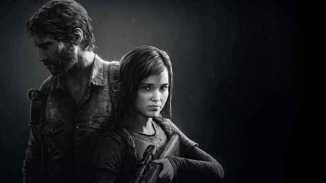

Quais são os benefícios dos games Eletronicos ?

Se engana quem pensa que apenas o nosso corpo necessita de exercícios regulares para o bom funcionamento: nosso cérebro também precisa se manter ativo para conservar suas habilidades cognitivas por mais tempo.
Afinal, ele é responsável pela nossa capacidade de pensamento , linguagem, movimento voluntário, assim como aprender e memorizar as informações que recebemos diariamente.
Qual jogo é mais querido pelos Fãs ?

Super Mario
Nesse contexto, o Brasil desempenha um papel importante, tendo um destaque cada vez maior no desenvolvimento de jogos. Dentre os games mais conhecidos do mundo, Super Mario Bros, que recentemente virou filme é, disparado, aquele com maior popularidade, seguido por Tetris, que também ganhou um filme, e Minecraft.
Super Mario Bros
(1985)
Este jogo de plataforma da Nintendo é um dos mais icônicos e influentes de todos os tempos, estabelecendo o personagem Mario como um ícone da indústria de jogos.

Street Fighter
Street Fighter, popularmente abreviado para SF, é uma série de jogos de luta desenvolvida pela fabricante japonesa de jogos eletrônicos Capcom.
A série conta a história de Ryu, Ken e Chun-Li em busca de adversários fortes, lutando contra a organização Shadaloo de M. Bison e descobrindo o poder sobrenatural do Hadou que leva ao Hadouken e Shoryuken.

The Last of Us
Joel, um sobrevivente duro e cínico, e a jovem e impetuosa Ellie se conectam pela dificuldade do mundo em que vivem. Juntos, eles enfrentam circunstâncias brutais e monstros impiedosos durante uma difícil jornada pelos EUA após um surto apocalíptico.
Voce Sabia ! O Pong, é considerado o primeiro jogo eletrônico da história, é um bom exemplo de como eram os jogos da época.

God of War
God of War é um jogo eletrônico de ação-aventura desenvolvido pela Santa Monica Studio e publicado pela Sony Interactive Entertainment. Foi lançado em 20 de abril de 2018 para PlayStation 4 e em 14 de janeiro de 2022 para Microsoft Windows.